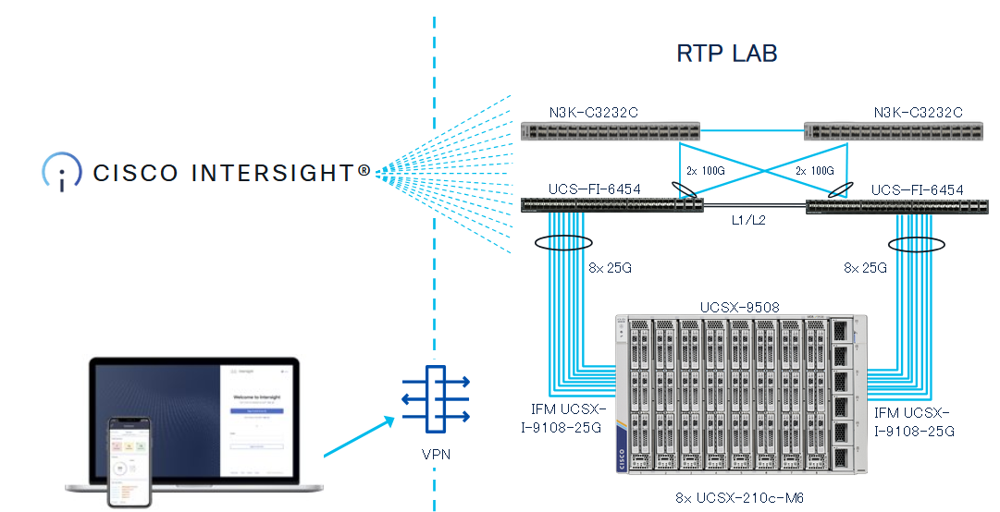

Network Diagram
Because Intersight is a SaaS platform, there is no need to use VPN to the physical hardware,
which is located in RTP, NC.
Here is a very simplistic overview of the Network Diagram.

You can connect with the laptop to Intersight and do all tasks, steps of this lab. For this lab, every participant wil have one physical server to configure.
DO NOT CHANGE THE CHASSIS or DOMAIN POLICIES
This will have an influence on everybody who is working in the lab.